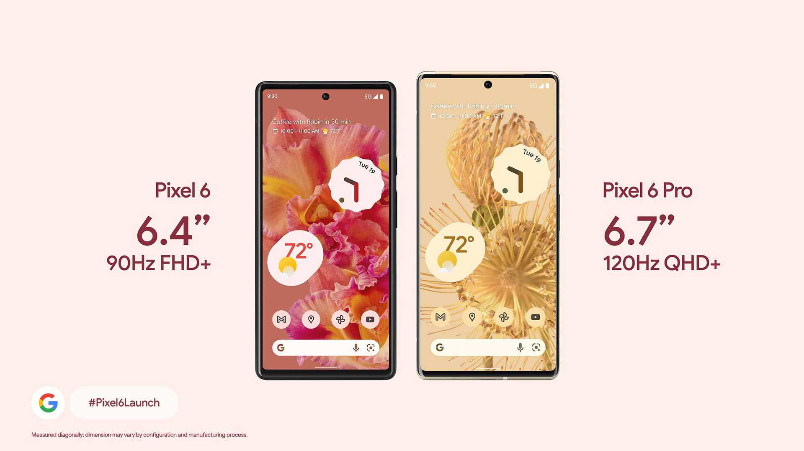
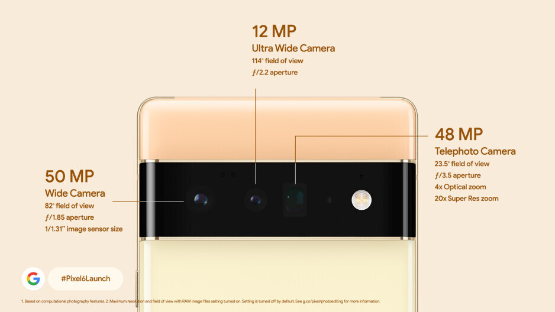

Pixel 6 and 6 Pro
Google Pixel 6 и 6 Pro— это флагманы софтверного гиганта, продолжающая известную серию «фирменных» смартфонов Google c абсолютно чистым интерфейсом ОС, не тронутым вмешательством сторонних разработчиков и производителей. Аппарат не получился идеальным — наоборот, во многом спорным. И к тому же, этот продукт никогда официально не достигнет нашего рынка. Но традиционно высочайшее качество съемки и относительно доступная цена продолжают привлекать многих пользователей к этим недоступным в официальной рознице, но таким желанным мобильным продуктам марки Google Pixel. Они оснащены первым процессором от Google с сотрудничеством с IT гигантом Samsung,название этого чипа Google Tensor. Этот 8 ядерный чипсет изготовлен по 5-нанометровому техпроцессу. Он имеет 2 ядра Cortex-X1 на 2800 МГц, 2 ядра Cortex-A76 на 2250 МГц и 4 ядра Cortex-A55 на 1800 МГц.Pixel 6 и Pixel 6 Pro большая мощность ни к чему — это не игровые модели. В то же время за счёт оптимизации Android 13 в реальных сценариях использования новинки могут оказаться лучше иных флагманов. И, естественно, акцент в SoC сделан на возможностях ИИ и машинного обучения (особенно это касается камеры): в этом плане Tensor должна быть если не впереди, то на уровне иных топовых SoC. . Именно на него ложится наибольшая нагрузка при ускорении задач ИИ. У каждой модели по две конфигурации: 8/128 и 8/256 ГБ у Pixel 6 и 12/128 и 12/256 ГБ у Pixel 6 Pro.
ХАРАКТЕРИСТИКИ
Камера Pixel 6 представлена двумя модулями.В основной - 50-мегапиксельный сенсор,широкоугольный объектив и оптическая стабилизация,в другом — 12-мегапиксельный датчик и сверхширокоугольный объектив.В Pixel 6 Pro есть и третий модуль—с датчиком разрешением 48 Мп и объективом, обеспечивающим 5-кратный оптический зум. Соответственно, максимальный зум в Pixel 6 — 5x, в Pixel 6 Pro — 20x. Из общего — обе модели поддерживают беспроводную зарядку, оснащены чипами Titan M1 и имеют защиту от пыли и воды в соответствии со степенью IP68. Фронтальные камеры тоже одинаковые — с сенсорами разрешением 10,8 Мп и поддержкой записи видео 4К.
Pixel 6 Pro получил экран OLED с диагональю 6,7 дюйма, разрешением QHD+ и кадровой частотой 120 Гц. У Pixel 6 дисплей попроще: 6,4 дюйма, Full HD+ и 90 Гц.Ёмкость аккумулятора Pixel 6 Pro составила 5000 мА·ч, ёмкость аккумулятора Pixel 6 — 4614 мА·ч. За Pixel 6 в базовой конфигурации просят 600 долларов или 650 евро, за Pixel 6 Pro — 800 долларов или 900 евро.
ОБЗОР